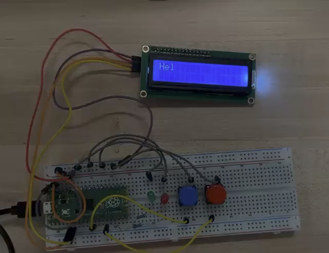
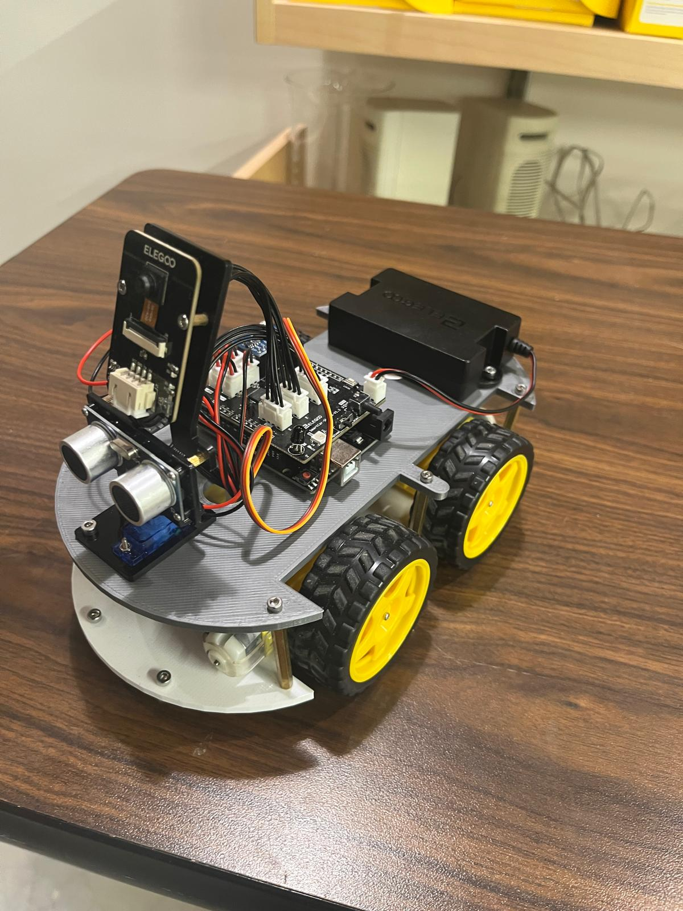
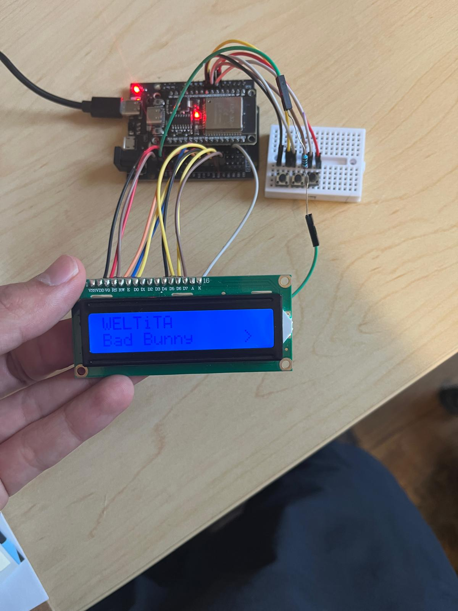
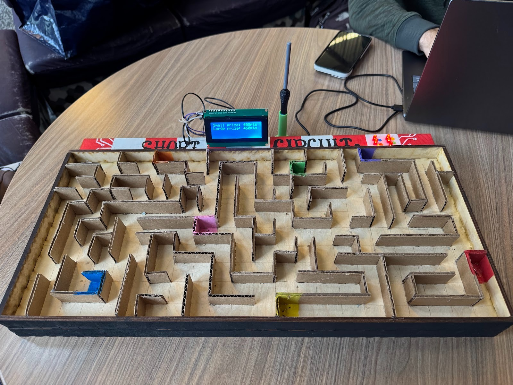
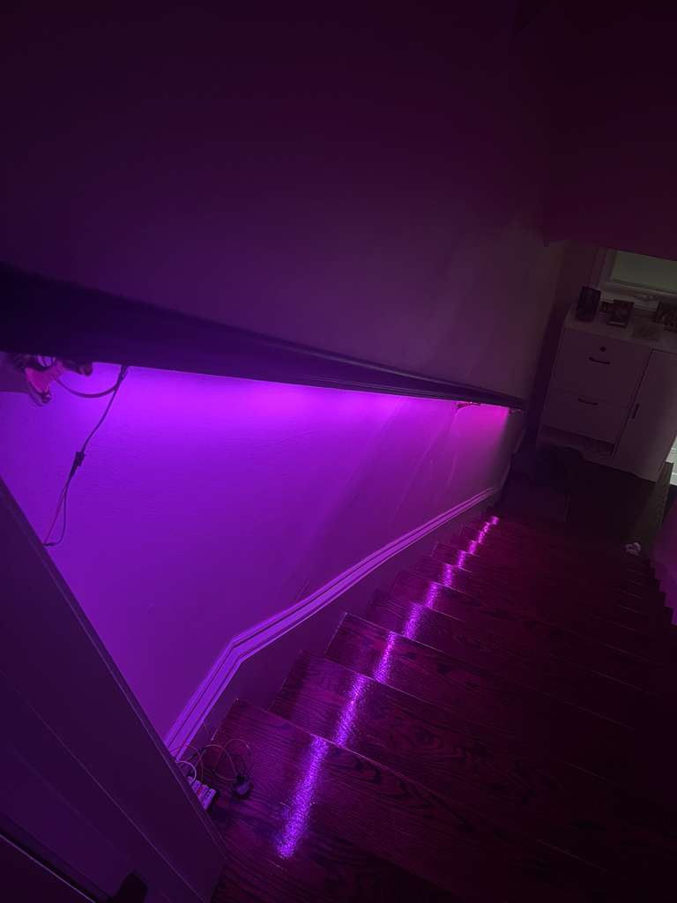
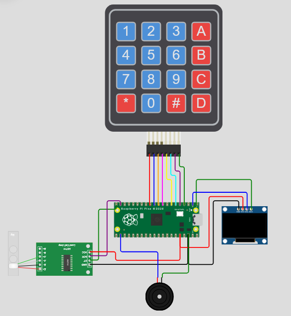

Education
Northeastern University
Sept 2024 - May 2029
B.S. Computer Engineering · Boston, MA
GPA 3.96
Dean's List
Courses: Discrete Structures, Computing Fundamentals, Differential Equations & Linear Algebra, Calculus 2
Activities: Robotics Club, Virtual Reality Lab Assistant, VR Research, Northeastern Virtual Reality Club
Technical Skills
Programming
Web
Embedded
Tools
Projects

Real-Time Cooperative Task Scheduler
Feb 2026 - Apr 2026
C++Raspberry Pi Pico
GitLaTeX
- Designed a priority-based task scheduler in C++ demonstrating OOP principles.
- Programmed interrupt-driven architecture using GPIO and hardware timer ISRs with safe shared-state management.
- Implemented five cooperating classes managing LCD display with VIP preemption and cooperative task resumption.
- Wrote technical documentation in LaTeX covering system design, pseudocode, and implementation analysis.

Autonomous Line-Following Robot
Sept 2025 - Dec 2025
ArduinoC++
SensorsGit
- Programmed an autonomous robot in Arduino C++ to process sensor data and control motors for accurate path-following.
- Developed modular, maintainable code with real-time logic for reliable hardware-software integration.
- Calibrated and tested multiple sensors to ensure responsive and repeatable performance.
- Won first place in end-of-year competition against three teams.

Spotify Controller Hub
Sept 2025 - Nov 2025
C++ESP32
GitSpotify API
- Designed and built an embedded controller that manages hardware inputs to control Spotify playback.
- Programmed an ESP32 in C++ to handle Wi-Fi communication, API requests, and hardware input processing.
- Created and tested circuit connections for reliable input handling and Wi-Fi connectivity.
- Enabled seamless hands-free Spotify control, improving workflow efficiency.

Carnival Maze Game
Sept 2025 - Dec 2025
MicroPythonRaspberry Pi Pico
AutoCADGit
- Built an automated carnival maze game with a team of three where players guide a metal ball with a model soldering iron to complete objectives under time pressure.
- Programmed ball detection, LED feedback, buzzer timing, and LCD score display on a Raspberry Pi Pico in MicroPython.
- Designed laser-cut maze base and walls in AutoCAD and integrated the Pico with conductivity-based maze sensors.
- Demonstrated at end-of-semester carnival event with 50+ successful plays and no technical failures.

Smart Stair Lights
Nov 2025 - Feb 2026
ESP32C++
NeoPixelHTML/CSS
- Built an ESP32-based smart stair lighting system with motion-activated wake, deep sleep power saving, and web-based RGB control.
- Programmed deep sleep mode with PIR-sensor and manual button GPIO wake-up to maximize battery life, with user settings persisted in ESP32 non-volatile storage.
- Created a local web interface for RGB color and brightness adjustment, removing the need for a proprietary app or cloud service.
- Implemented OTA firmware updates via ArduinoOTA and automatic WiFi provisioning with a WiFiManager captive portal.

Gamified Hydration Tracker
Jan 2026 - Apr 2026
MicroPythonRaspberry Pi Pico
HX711 Load CellOLED
- Built a Raspberry Pi Pico hydration tracker that weighs a water bottle with an HX711 load cell and gamifies intake with an animated cat companion whose mood reflects hydration progress.
- Programmed an embedded state machine for cat mood transitions and non-blocking timer-based events to keep the SSD1306 OLED UI responsive.
- Designed a keypad-driven setup flow that computes daily targets from body weight and activity level, with buzzer audio celebrations on milestone completion.
- Replaced easy-to-dismiss notification reminders with tangible, real-world feedback to make hydration tracking automatic and engaging.
Experience
VR Experience Lab — Northeastern University
Jan 2025 - Aug 2025
Research Assistant · C# · Unity3D
Boston, MA- Investigated how haptic and visual feedback interact in VR through user testing of a Unity3D simulation in C#.
- Collaborated with a co-researcher to conduct 20+ participant sessions.
- Analyzed findings and shared results with a team of 8 researchers.
VR Immersive Media Lab — Northeastern University
May 2025 - June 2025
Work Study Associate · C# · Git · Unity3D
Boston, MA- Supported VR projects and assisted students and faculty with equipment setup and troubleshooting.
- Collaborated with a team of three to develop a VR story experience in Unity3D using C#.
- Managed version control and collaborative workflows through Git.
TechHunt PCs
Sept 2021 - Jan 2025
Business Owner
Boston, MA- Founded and operated a small business specializing in building, repairing, and selling custom PCs.
- Built and refurbished over 60 computer systems, ensuring reliable hardware performance.
- Diagnosed hardware and software issues across diverse systems, earning 20+ five-star reviews.
Activities & Leadership
Northeastern Robotics — Intro to Robotics Teacher
2026 - PresentNortheastern Virtual Reality — Executive Board, Project Lead
2024 - PresentBoston Ruhi Institute — Junior Youth Coordinator
2018 - Present